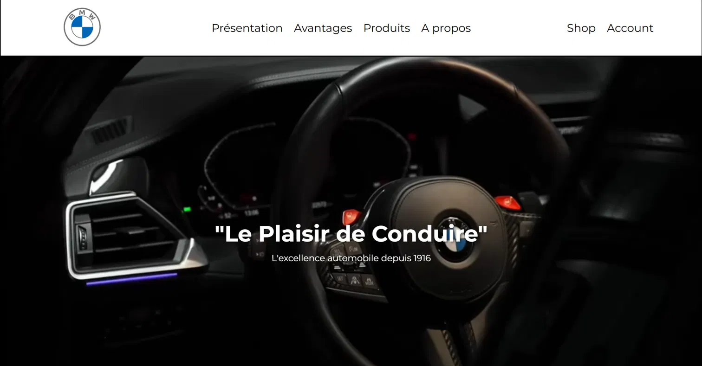

DAS AUTO
My first front-end project, in plain HTML and CSS
Context
A coursework assignment: build a static showcase site for a company of my choice, using nothing but HTML and CSS. No framework, no JavaScript, no shortcuts.
I include it deliberately. It is the earliest thing here, and it marks where I started.
What I built
Three pages sharing a fixed navigation bar, a hero section with a full-width background video, a presentation section, a four-column advantages grid and a product grid linking to detail anchors, plus a footer with a newsletter form and social links.

The bug that taught me the most
At one point the page rendered with no styling at all. No error message, no console warning, just raw HTML. I had moved the pages into a subfolder, and every relative path in the document broke at once: the stylesheet, the images, the video.
A relative path starts from the folder containing the current document, not from the root of the server. Moving a file therefore invalidates every path inside it. And a missing stylesheet fails silently, which is what made it confusing.
What I actually learned was the method: open the network tab, look at what the browser requested and what it got back, and compare that URL to where the file really is. The gap between them is the bug. I have used that approach on every project since.
Looking back at it
Things I would do differently now: use semantic sections instead of nested containers, avoid spaces in filenames, keep the CSS split by responsibility rather than in one long file, and write the layout mobile-first rather than adding breakpoints afterwards.
Being able to list those is the point of keeping this project on the site.